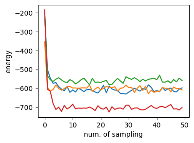
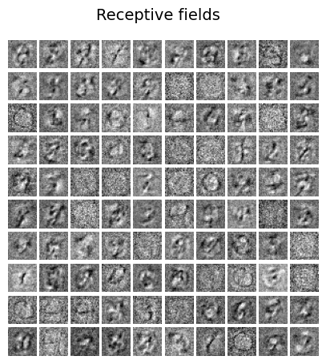

9.3 ボルツãƒãƒ³ãƒã‚·ãƒ³Â¶
9.3.1 エネルギーベースモデル (Energy-based model)¶
入力 \(\mathbf{x}\in \mathbb{R}^d\), エネルギー関数 \(E_\theta: \mathbb{R}^d\to \mathbb{R}\)を考える。
\[\begin{split}
\begin{align}
p_\theta(\mathbf{x})&=\frac{\exp(-E_\theta(\mathbf{x})}{Z_\theta}\\
Z_\theta &= \int \exp(-E_\theta(\mathbf{x})) d\mathbf{x}
\end{align}
\end{split}\]
\(Z_\theta\)は分配関数。
9.3.2 ボルツマンマシン (Boltzmann machine)¶
9.3.3 制限ボルツマンマシン (Restricted Boltzmann machine)¶
(cf.) http://deeplearning.net/tutorial/rbm.html
データã®èªã¿è¾¼ã¿
using MLDatasets
using PyPlot
using Random
using ProgressMeter
train_x, _ = MNIST.traindata()
size(train_x)
(28, 28, 60000)
figure(figsize=(4, 1.5))
for i in 1:4
subplot(1,4,i)
imshow(train_x[:, :, i]', cmap="gray")
axis("off")
end
tight_layout()
num_data = 100
input_size = 28*28
data = train_x[:, :, 1:num_data]
data = reshape(data, (input_size, num_data))'
println(size(data))
(100, 784)
width = 28 # MNIST dataの幅
num_v = input_size # visible variables
num_h = 100 # hidden variables
num_units = num_v + num_h # all units
η = 0.01 # Coefficient of learning
num_epoch = 50 # cycle of learning
num_draws = 20 # The number of samples to draw 1 5 20 50 100
20
離散の観測変数(visible variable) \(\mathbf{v}\), 潜在変数(hidden variable) \(\mathbf{h}\)とする。各ユニットの値は\(\{0, 1\}\)の2値 (binary)である。
エネルギー関数を
\[
E_\theta(\mathbf{v}, \mathbf{h})=-\mathbf{b}^T \mathbf{v} - \mathbf{c}^T \mathbf{h} + \mathbf{v}^T \mathbf{W} \mathbf{h}
\]
ã¨ã™ã‚‹ã€‚ãŸã ã—ã€\(\theta=\{\mathbf{W}, \mathbf{b}, \mathbf{c}\}\)
# sigmoid function
sigmoid(x) = 1 / (1+exp(-x))
# Initial parameters
W = 0.2 * randn(num_h, num_v)
hbias = 0.2* randn(num_h, 1)
vbias = 0.2 * randn(num_v, 1)
println(size(W), size(hbias), size(vbias))
(100, 784)(100, 1)(784, 1)
シグモイド関数を
\[
\sigma(x) = \frac{1}{1+\exp(-x)}
\]
とする。
訓練データã§å¦ç¿’¶
\[\begin{split}
\begin{align}
p_\theta(\mathbf{h}|\mathbf{v})&=\prod_i p_\theta(h_i=1|\mathbf{v})=\prod_i \sigma(c_i + W_i \mathbf{v})\\
p_\theta(\mathbf{v}|\mathbf{h})&=\prod_j p_\theta(v_j=1|\mathbf{h})=\prod_j \sigma(b_j + W_j^T \mathbf{h})
\end{align}
\end{split}\]
@showprogress "Computing..." for epoch in 1:num_epoch
for i in 1:num_data
input = data[i, :]
h_given_v = sigmoid.(W * input + hbias)
v = 0.5 * ones(num_v, 1) # init state
h = 0.5 * ones(num_h, 1) # init state
sum_v = zeros(num_v, 1)
sum_h = zeros(num_h, 1)
outerprod = zeros(num_h, num_v)
for _ in 1:num_draws
h = 1.0f0 * (sigmoid.(W * v + hbias) .≥ rand(num_h, 1)) # hidden
v = 1.0f0 * (sigmoid.(W' * h + vbias) .≥ rand(num_v, 1)) # visible
#h = floor.(sigmoid.(W * v + hbias) + rand(num_h, 1)) # hidden
#v = floor.(sigmoid.(W' * h + vbias) + rand(num_v, 1)) # visible
sum_h += h
sum_v += v
outerprod += h * v'
end
sum_h /= num_draws
sum_v /= num_draws
outerprod /= num_draws
# update parameters
W += η * (h_given_v * input' - outerprod)
hbias += η * (h_given_v - sum_h)
vbias += η * (input - sum_v)
end
end
äºŒé …åˆ†å¸ƒ (bernoulli distribution)のサンプリングには2通りある。1.0f0を乗じているのはBool変数からFloatへの変換のため。詳細はtips.
テストデータã§ç¢ºèªÂ¶
num_draws_test = 50 # MCMC for TEST
num_see = 392 # Visible units in testy 5 10 15 20 25
noise_scale = 0.1 # テスト時のノイズレベル
num_testdata = 4
4
testdata = data[1:num_testdata, :] + noise_scale * randn(num_testdata, input_size)
testdata[:, num_see+1:num_v] .= 0.5
figure(figsize=(4, 1.5))
for i in 1:4
subplot(1,4,i)
imshow(reshape(testdata[i, :], (width, width))', cmap="gray")
axis("off")
end
tight_layout()
energy(v, h) = -v' * vbias - h' * hbias - h' * W * v
# free_energy(v) = -v' * vbias .- sum(log.(1 .+ exp.(W * v + hbias)))
energy (generic function with 1 method)
# Results of Test data
energy_arr = zeros(num_testdata, num_draws_test)
figure(figsize=(4, 1.5))
for i in 1:num_testdata
v = 0.5 * ones(num_v, 1) # init state
h = 0.5 * ones(num_h, 1) # init state
sum_v = zeros(num_v, 1)
for j in 1:num_draws_test
v[1:num_see, 1] = testdata[i, 1:num_see]'
h = 1.0f0 * (sigmoid.(W * v + hbias) .≥ rand(num_h, 1))
v = 1.0f0 * (sigmoid.(W' * h + vbias) .≥ rand(num_v, 1))
sum_v += v
energy_arr[i, j] = energy(v, h)[1]
end
sum_v /= num_draws_test
# show
subplot(1,4,i)
imshow(reshape(sum_v, (width, width))', cmap="gray")
axis("off")
end
tight_layout()
エネルギーの変化を見る
figure(figsize=(4,3))
ylabel("energy")
xlabel("num. of sampling")
for i in 1:4
plot(energy_arr[i, :])
end

å—容é‡ã®å¯è¦–化¶
# Plot Receptive fields
figure(figsize=(5, 5))
subplots_adjust(hspace=0.1, wspace=0.1)
for i in 1:num_h
subplot(10, 10, i)
imshow(reshape(W[i, :], (width, width))', cmap="gray")
axis("off")
end
suptitle("Receptive fields", fontsize=14)
subplots_adjust(top=0.9)
